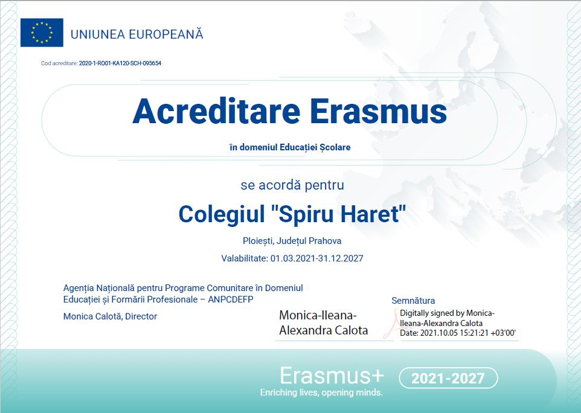

Telefon: 0244-512161 | Email: spiruh2003@yahoo.com; spiruharetpl@gmail.com
Proiecte ►
PROIECTE ERASMUS +
Acreditare Erasmus+
Perspective Europene - 2019
EU-Practic
PROIECTE ERASMUS + VET
Proiect VET 1
Proiect VET 2
Acreditare Erasmus in Domeniul Educatiei si Formarii Profesionale
Categorie:
erasmus+
Apel Selectie Proiect Erasmus 2021 - 2022
Procedura de selectie Proiect Erasmus 2021 - 2022

Anunt acreditare
Anul I Acreditare Erasmus+
Procedura selectie elevi-ERASMUS+VET-2023-2024
Rezultate_selectie-concurs-I
Rezultate_selectie-concurs-I-contestatie
Rezultate_selectie-concurs-I-dupa-contestatie
Anunt-informare-proiect-2023-1-RO01-KA121-VET-000133324-II
Procedura selectie ERASMUS+2023-2024-II
Rezultate selectie concurs - II
Rezultate_selectie-concurs-finale
Baner
Diseminare proiect Erasmus+ VET-an I
Roll-up
Anul II Acreditare Erasmus+
Anunt
Procedura selectie ERASMUS+2024-an-II
Rezultate-finale-inainte-de-contestatii-anonimizate
Rezultate-finale-dupa-contestatii-anonimizate
Lista-beneficiari-sprijin-incluziune-250euro-an-II
Roll-up
Diseminare proiect Erasmus+ VET-an II
Banner-an II
Jurnal de proiect - an II
LISTA CADRELOR DIDACTICE ÎNSCRISE LA CONCURSUL DE SELECȚIE A PARTICIPANȚILOR LA MOBILITĂȚI ÎN CADRUL PROIECTULUI ERASMUS+, ACȚIUNEA CHEIE 1: PROIECTE DE MOBILITATE ÎN DOMENIUL EDUCAȚIEI ȘCOLARE
LISTA ELEVILOR INSCRISI LA MOBILITATI IN CADRUL PROIECTULUI ERASMUS+_01.02.2023
REPARTIZARE-PROBA INTERVIU_ELEVI_ERASMUS
REZULTATE EVALUARE ADMINISTRATIVĂ DOSARE_ELEVI_ERASMUS
REZULTATE ETAPA DE SELECȚIE A CADRELOR DIDACTICE pentru participarea la mobilități în cadrul proiectului Erasmus+
https://erasmus-plus.ec.europa.eu/projects/search/details/2022-1-RO01-KA121-SCH-000061519
Apel de selecție cadru didactic participant în cadrul proiectului două cadre didactice cu statut de rezervă.
Procedură selecție cadre didactice.
REZULTATE FINALE SELECTIE ELEVI_ERASMUS_AFIȘAT
DISEMINARE ERASMUS+_PRAGA 2023
DISEMINARE ERASMUS+_VIENA 2023
DISEMINARE ERASMUS+_KONYA 2023
ACREDITARE ERASMUS + AN III
APEL_SELECIE_CADRE_DIDACTICE_ERASMUS__2023_2024
PROCEDUR_SELECIE_ERASMUS_CADRE_DIDACTICE_2023_2024
PROCEDUR_SELECIE_ERASMUS_ELEVI_2023_2024
Rezultate_selectie_cadre_didactice_ERASMUS
REZULTAT_SELECIE_ELEVI_LOCURI_PENTRU_OPORTUNII_REDUSE
DISEMINARE_CURS STRUCTURAT_APRILIE_2024
DISEMINARE_MOBILITĂȚI DE GRUP ALE ELEVILOR_MAI_2024
Anul IV Acreditare Erasmus+
APEL I_SELECȚIE CADRE DIDACTICE_ERASMUS +_2024_2025
APEL SELECȚIE ELEVI_ERASMUS +_2024_2025
PROCEDURĂ SELECȚIE I_CADRE DIDACTICE_2024_2025
PROCEDURĂ SELECȚIE ERASMUS+_ELEVI_2024_2025
ERASMUS_Rezultate selectie elevi inainte de contestatii
ERASMUS AN IV_REZULTATE SELECȚIE ELEVI_LOCURI PENTRU OPORTUNIȚĂȚI REDUSE
ERASMUS_Rezultate_finale_selectie_elevi
PROCEDURĂ SELECȚIE ERASMUS+_ELEVI_2024_2025
REZULTATE_ APEL I_SELECȚIE CADRE DIDACTICE
DISEMINARE_MOBILITATE DE GRUP A ELEVILOR_KONYA_2024
APEL 2 SELECȚIE CADRE DIDACTICE_ERASMUS +_2024_2025
PROCEDURĂ SELECȚIE 2 _CADRE DIDACTICE_2024_2025
REZULTATE SELECȚIE CADRE DIDACTICE_ÎNAINTE DE CONTESTAȚII_2025
REZULTATE FINALE SELECȚIE CADRE DIDACTICE_2025
DISEMINARE_CURS STRUCTURAT_Barcelona 2025